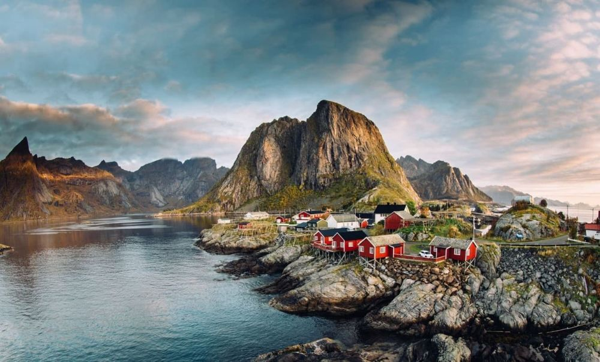

Descoperă Arhipelagul Lofoten - Paradisul pescarilor
Arhipelagul Lofoten din Norvegia este un loc de o frumusețe naturală uimitoare, cu peisaje spectaculoase și tradiții pescărești:
-

Aurora boreală
Lofoten este unul dintre cele mai bune locuri din lume pentru a admira spectacolul natural al aurorii boreale.
-

Sate pitorești de pescari
Tradițiile pescărești sunt vii în satele colorate și pitorești de pe insulele arhipelagului.
-

Drumeții spectaculoase
Peisajele montane și traseele de drumeții oferă aventuri senzaționale și priveliști panoramice.
-

Plaje și ape cristaline
Arhipelagul are plaje de nisip alb și ape albastre cristaline, cu o frumusețe unică.
-

Gastronomie locală
Te poți bucura de fructe de mare proaspete și mâncăruri delicioase în restaurantele locale.
Concluzii
Arhipelagul Lofoten este o destinație de basm, cu peisaje magnifice și o atmosferă unică, combinând tradițiile cu natura impresionantă.